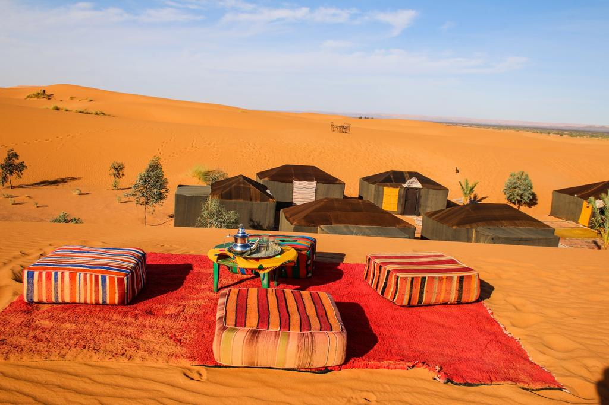
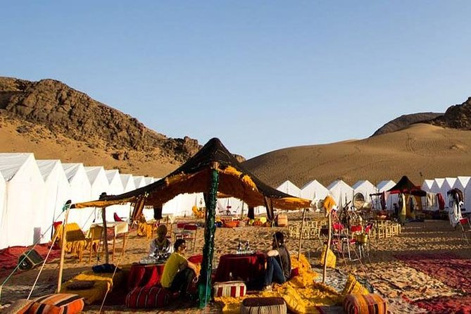
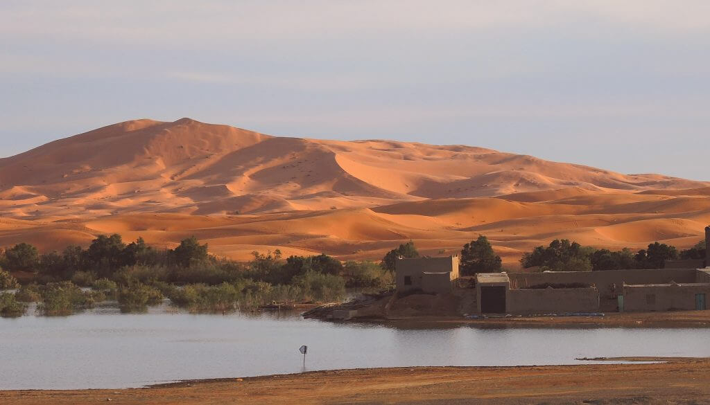
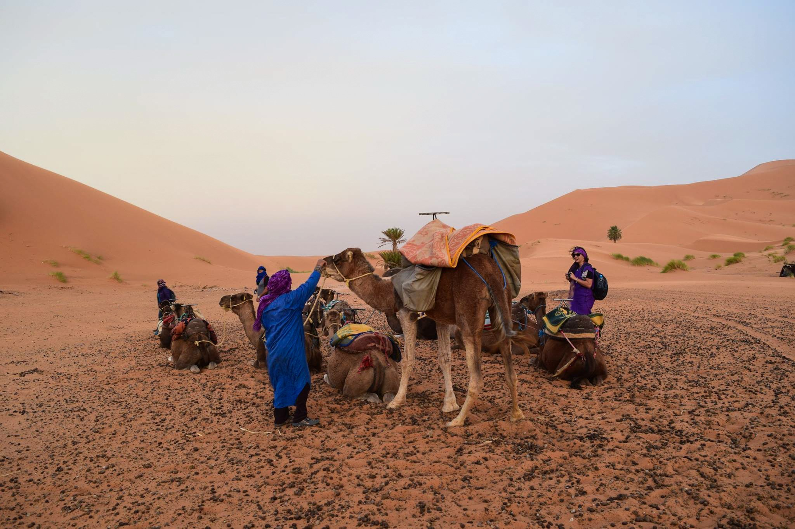

MERZOUGA
|
Merzouga est un petit village saharien situé dans le sud-est du Maroc, à 35 kilomètres de Moulay Ali Cherif, à 50 kilomètres de Erfoud, et à 50 kilomètres de la frontière algérienne, à 562 km de Marrakech, à 602 km de Rabat (capitale nationale), à 667 km de Casablanca, et à 669 km d'Agadir (côte Atlantique).Merzouga est réputé pour ses dunes, les plus hautes du Maroc. Le village jouxte en effet le plus grand erg du Maroc l'erg Chebbi.Merzouga est devenu un pôle d'attraction touristique de première importance pour cette région du Maroc, permettant le développement d'une industrie hôtelière, aussi bien localement que dans les localités voisines de Errachidia et d'Erfoud.Merzouga est également connu par les étudiants de France et d'Europe, depuis plus d'une décennie, pour être le point de chute du célèbre Raid étudiant, le Raid 4L Trophy qui y installe chaque année son bivouac avec ses quelques 1200 voitures.Les activités proposées aux touristes sont la randonnée chamelière, le bivouac dans le désert, le quad, et, l'été, l'arénothérapie (ou bain de sable) appelée également psammatothérapie.L'équilibre du site de Merzouga est menacé par la construction anarchique d'hôtels, la surfréquentation touristique et le développement des "sports mécaniques" (quad). |
 | |
|  |
Porte d’entrée principale du Sahara, le Tafilalet, la région de Merzouga Maroc, depuis de nombreux siècles, sert de lieu d’échange entre le Nord et le Sud. Ce carrefour du désert a vu passer des caravanes chargées des plus grands trésors : or, épices, sel,…C’est la région historique de la dynastie alaouite, dont l’actuel roi actuel, Mohammed VI, est le descendant direct. Sa riche histoire et la beauté légendaire de ses paysages, font indiscutablement de la région de Merzouga, un lieu incontournable au Maroc et une destination idéale pour savourer des vacances en famille ou en aventurier.L’auberge Africa, à travers son guide sur Merzouga, vous propose de découvrir les plus beaux endroits de la région, de visiter les lieux imprégnés d’histoire ou d’essayer des activités absolument originales pendant votre voyage ! Voici la liste des services que nous mettons à votre disposition pour rendre votre séjour touristique au Sahara inoubliable.La nuit se passe au bivouac, sous la khaïma, la tente typiquement berbère. Au Maroc, un bivouac traditionnel passe par la dégustation du fameux tajine marocain. Vous aurez même accès à la « télévision berbère », mais malheureusement, il n’y a qu’une seule chaîne, celle du ciel étoilé… |
|
|
Notre guide vous préparera un tajine délicieux que vous savourerez sous la grande voûte étoilée qui ne souffre ici d’aucune pollution lumineuse… La veillée pourra être accompagnée de chants berbères et des percussions marocaines.Vous pourrez ensuite passer une nuit dans le Sahara calme et paisible sous la khaïma, la tente berbère du Maroc. Cette tente traditionnelle des nomades est un assemblage de bandes de laine de dromadaire très isolante, cousues et soutenues par une structure en bois.Vous dormirez sur une épaisse couche de tapis du Maroc pour un confort parfait. Au petit matin…grasse matinée si vous le souhaitez, mais il vaut mieux se lever tôt, et grimper la dune pour aller admirer le splendide lever de soleil qui apparaît au dessus de l’Algérie…La psammatothérapie ou l’arénothérapie ou la sablothérapie ou encore l’enterrement curatif dans les sables ou bains de sable est une médecine douce qui s’adresse aux personnes souffrant de rhumatismes. Il s’agit en fait littéralement de bains de sable, c’est-à-dire s’enterrer quelques minutes dans le sable très chaud des dunes de Merzouga. Même si cette pratique concerne plus souvent les locaux, il existe néanmoins un vrai tourisme lié à la santé à Merzouga. |
 | |
|  |
Pratique ancestrale aux multiples vertus, le bain de sable traitement serait efficace contre les rhumatismes, la polyarthrite, les lombalgies et certaines maladies de peau.L’auberge Africa propose son savoir faire depuis de nombreuses années dans l’accueil et l’accompagnement des « baigneurs », afin que le bain de sable soit réalisé dans les meilleures conditions. En effet, ce traitement (ou jeu pour certains) ne peut être fait à n’importe quelle heure de la journée, et une visite préalable auprès du médecin de Merzouga est exigée, car le bain de sable ne peut pas être pratiqué dans certains cas (certaines maladies cardiaques ou formes d’asthmes, diabète).Le bain de sable est pratiqué entre les mois de juin et septembre, lorsque le sable est au plus chaud.Le bain de sable est un soin pratiqué depuis des siècles pour combattre les douleurs dues aux rhumatismes et autres problèmes de dos, mais aussi de sur-poids.Lors de certaines thalassothérapie, la sable est utilisé en cabine et vous êtes alors recouvert d’une couche de sable, chauffé à 45°C et d’une épaisseur de quelques centimètres. Le bain de sable effectué directement dans les dunes du désert marocain a un énorme avantage qui est celui de n’avoir aucun sable à chauffer. La période la plus propice au bains de sable se situe en juin et en septembre car il fait très chaud et le sable est naturellement à une température idéale de 45°C. |
|